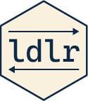

Cross-validated LDL predictions
cross_validation.RdCompute leave-one-out or balanced k-fold end-state LDL predictions for any number of matched rows.
Usage
compute_comprehension_loo(C, S, output = NULL, progress = interactive(),
chunk_size = 25L, shift = 0.02)
compute_production_loo(S, C, output = NULL, progress = interactive(),
chunk_size = 25L, shift = 0.02)
compute_comprehension_cv(C, S, folds = 10L, seed = 314L,
output = NULL, progress = interactive(), shift = 0.02)
compute_production_cv(S, C, folds = 10L, seed = 314L,
output = NULL, progress = interactive(), shift = 0.02)
# S3 method for class 'ldlr_cv'
summary(object, by_fold = FALSE, ...)
# S3 method for class 'ldlr_cv'
as.data.frame(x, ...)
# S3 method for class 'ldlr_cv'
fitted(object, ...)Arguments
- C
A numeric cue matrix or
ldlr_cuesobject.- S
A matched numeric semantic matrix.
- folds
Number of cross-validation folds; defaults to 10.
- seed
Seed for reproducible balanced fold assignment.
- output
Optional CSV output path.
- progress
Whether to display an R progress bar.
- chunk_size
Rows calculated between leave-one-out progress updates.
- shift
Positive ridge shift;
0.02matches JudiLing's default.- object, x
An
ldlr_cvobject.- by_fold
Return one summary row per fold instead of an overall summary.
- ...
Additional arguments reserved for methods.
Value
An ldlr_cv object containing held-out predictions, targets, fold assignments, accuracy, and S_hat or C_hat. These objects support print(), summary(), as.data.frame(), fitted(), compute_measures(), and the ldlr persistence helpers.
Details
R validates input, creates balanced folds, displays progress, writes optional CSV output, and constructs the result. Leave-one-out predictions use an exact ridge-leverage identity and one Julia Cholesky factorization; this is equivalent to refitting JudiLing.make_transform_matrix() for every omitted row. K-fold fitting uses a Julia Cholesky implementation of the same shifted end-state estimator.